Estás en el modelo original: el que pelea. El modelo nuevo se abre desde el menú de arriba.
Esta página, la pelea y el escenario usan ya el borde verde con el contorno fuera. Detalles aquí abajo ↓.
El modelo vuelve al borde verde
Durante semanas el contorno de Voltia fue engordando sin querer. El punto bueno es
«Voltia pierde el contorno»: el sprite tenía un filo de 1 px y tres tonos (negro fino,
cian 5,176,157 y azul 22,81,104). El commit siguiente lo cambió a
negro macizo y de ahí ya no volvimos. Ahora la hoja que sirve todo el proyecto es la del borde
verde, con una sola cosa corregida: el filete cian que cruzaba la cadera y el muslo, fuera.
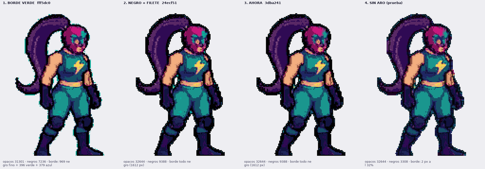
Las cuatro versiones, de izquierda a derecha: borde verde → negro fino con el
filete cian → negro grueso (lo que se servía) → el aro quitado. La tercera es la que
engordó la silueta; la elegida es la primera, sin el filete.
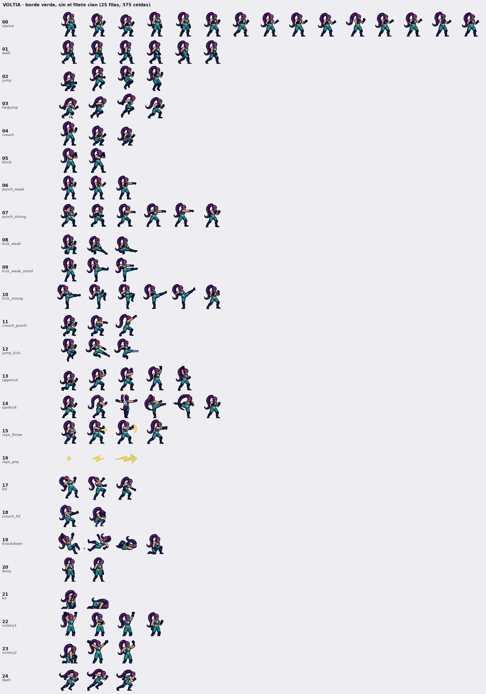
El modelo completo con el borde verde: 25 filas, 375 celdas, todas revisadas.
medido en el frame 0 del stance
borde verde
negro grueso
ahora
píxeles opacos (silueta)
31 301
32 644
31 301 — la silueta fina
píxeles casi negros
7 236
9 388
7 386
aro: de qué está hecho
969 negro + 396 cian + 379 azul
1 612 todo negro
igual que el verde, sin filete
cian dentro del traje
337 px
0 px
0 px
contorno, a 1×
1-2 px
3-4 px de negro
contorno fuera (−2 px de hoja)
Reconstrucción desde cero (la buena). Buscando algo más limpio que rescatar:
no hay nada. El frame nativo a 4× tiene 0,00 % de grano, pero al bajarlo a su resolución real
de arte (97×153) tiene 7,13 %: el ruido no lo metió el reescalado, está dentro del dibujo,
un nivel por debajo. Y assets/voltia_spritesheet.png (lo más limpio del repo, 0,54 %) es
otro diseño y otro tamaño, no sirve. Así que la hoja se reconstruye así, por frame:
÷4 NEAREST a 1× de arte → limpieza de grano por masa local (el color que aparece 3 veces o
menos en su entorno 5×5 pasa al mayoritario de al lado, protegiendo el negro de línea y el cian del
borde) → −1 px de arte de contorno → ×2 NEAREST a la hoja. Cero LANCZOS en todo el camino.
Grano del stance: 5,51 % → 1,47 %, bloques sucios 0,00 %, y los mismos 18 colores.
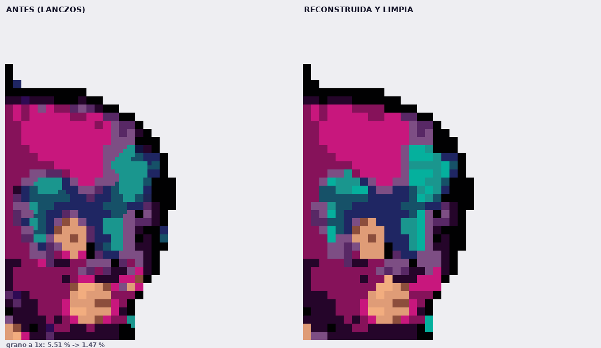
La cara a 8×: antes (LANCZOS) y después (reconstruida y limpia).
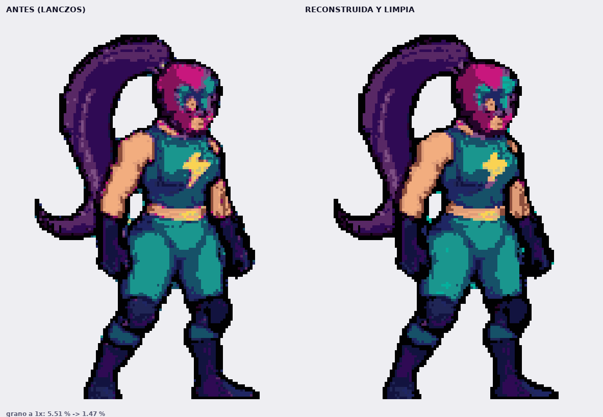
El sprite entero, mismo criterio.
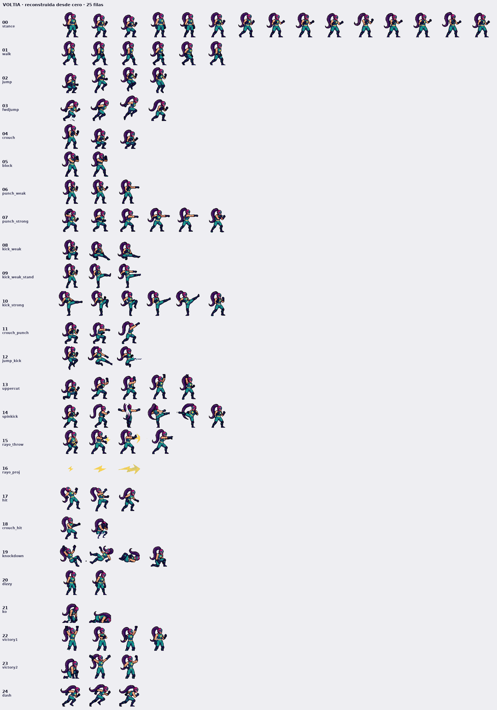
Las 25 filas reconstruidas y limpias, mismas animaciones y frames.
Y la causa de todo, encontrada. La hoja no nació sucia: la ensuciamos al
montarla. Los frames de voltia/frames/ tienen rejilla de píxel exacta de 4×
(0,00 % de bloques sucios), pero voltia/normalize.py los reescalaba con
LANCZOS y un factor no entero para igualar la altura de la cabeza. Eso inventa medios
píxeles: de ahí los cuadrados sueltos, los bordes poco lisos y el morado donde el azul se mezcla
con el rosa. Ahora la hoja se reconstruye desde los frames nativos bajando ÷2 exacto con
NEAREST (4× → 2×), sin colores nuevos y sin interpolación: 0,00 % de bloques no uniformes.
Se le vuelven a aplicar los dos arreglos de arriba (filete cian fuera y contorno −2 px), que en
esos frames nativos estaban sin hacer.
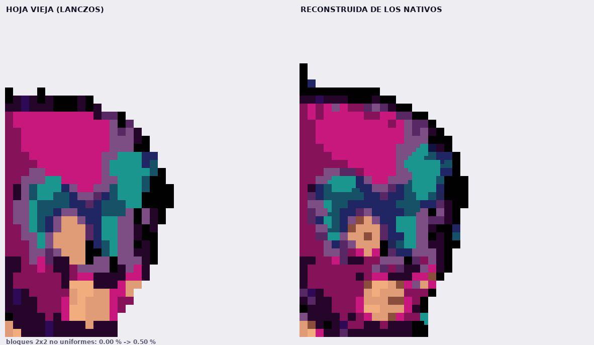
La cara a 8×. Izquierda: la hoja vieja, con el morado de mezcla y los cuadrados
sueltos. Derecha: reconstruida de los nativos, píxel limpio y detalle recuperado.
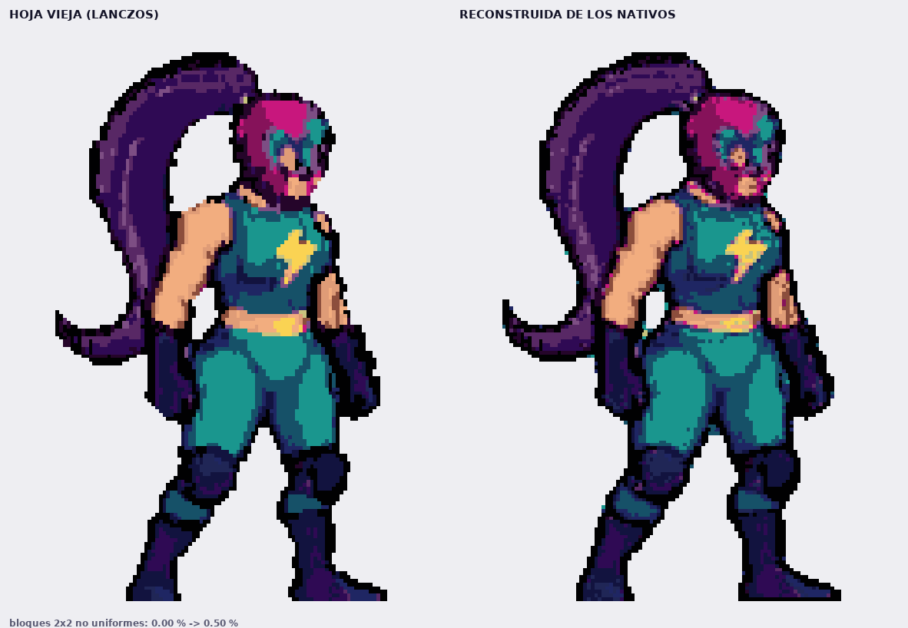
El sprite entero, mismo criterio.
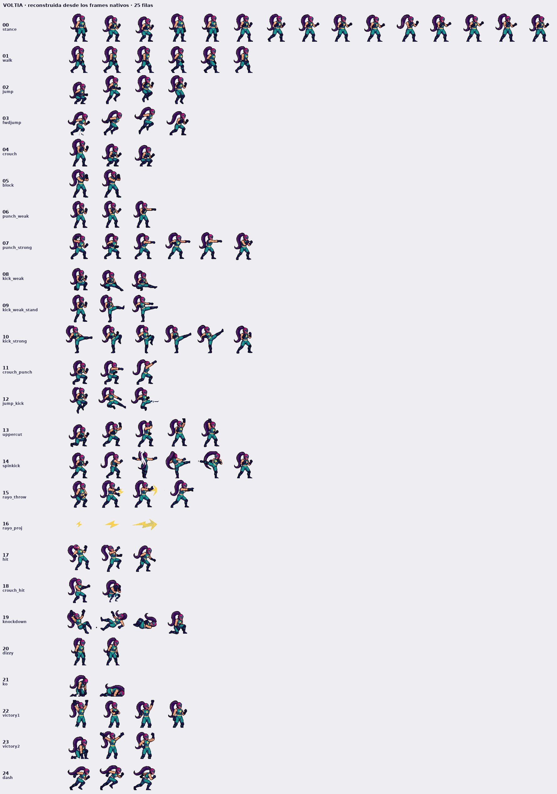
Las 25 filas reconstruidas de los nativos, mismas animaciones y frames.
Y encima, el pixel saneado. La hoja ya usaba solo 18 colores, así que la paleta
estaba bien: el problema era que el 52,85 % de los bloques 2×2 no eran uniformes — había color a
medio píxel, y a 1× el 5,21 % de los píxeles (33 714) no tenía ni un vecino de su color. Eso es el
ruido de la cara: una mota cian, un magenta suelto en la máscara, un amarillo en la coleta. Ahora:
bloques no uniformes 0,00 % y ruido 0,00 %, con los mismos 18 colores y las mismas
animaciones. Los trazos oscuros (el ojo, la boca, la línea del mentón) se protegen al bajar a 1×,
porque si no la mayoría por bloque se come la cara. Efecto secundario: la silueta engorda un
+3,2 % (el umbral de alfa 2 de 4 rellena las esquinas), que es lo que la deja más maciza.
Y encima, el contorno adelgazado. En la hoja el dibujo va a 2 px por px de arte, así
que el contorno medía 1-2 px: quitarle 2 px de hoja = 1 px de arte lo elimina entero y deja el azul
del traje haciendo de borde. Efecto medido en las 25 filas: silueta −11,9 % a −15,8 % (31 301 → 27 567 px
en el stance), alto 300 → 296, y ninguna fila se despieza (1 pieza por celda; la fila 3 deja
4, que es el rayo y su sombra). Se quitaron también los 36 puntitos sueltos que arrastraba el original.
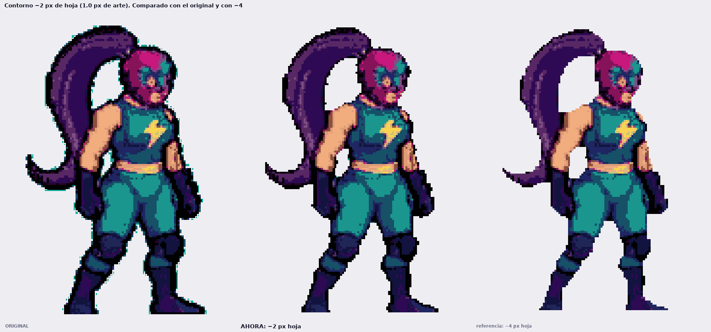
Original (con su contorno) · ahora: −2 px de hoja · referencia de −4 px, que ya
abre hueco entre el brazo y el costado. Ahí se ve por qué se paró en 2.
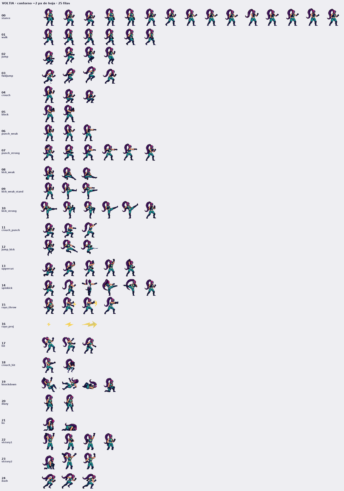
Las 25 filas con el contorno fuera, una por una.
Cómo se ha hecho, sin tocar el alfa (idéntico byte a byte en las 375 celdas):
se parte del sprite del borde verde y se busca el cian 5,176,157;
el cian que toca la transparencia es el borde → se queda (29 176 px en la hoja);
el cian rodeado de dibujo es el filete → se pinta con el color del trazo más cercano
(chamfer 1 / 1,4), 31 277 px, sin cambiar la silueta;
nada más se toca: ni el negro, ni el rayo, ni el traje.
Se aplicó a todo: al visor de esta página, a la pelea
(⚔ Pelea, que lee la hoja del mismo sheet.json) y al escenario
(voltia/stage/fighter.png, rehecho con la misma receta exacta: recorte
(78,19)–(272,325) del frame 0 a la mitad, 97×153). La versión de negro grueso queda guardada en
voltia/versions/sheet_negro_grueso.png y se puede ver aquí con
?aro=0. La prueba de quitar el aro entero sigue en
?aro=1.
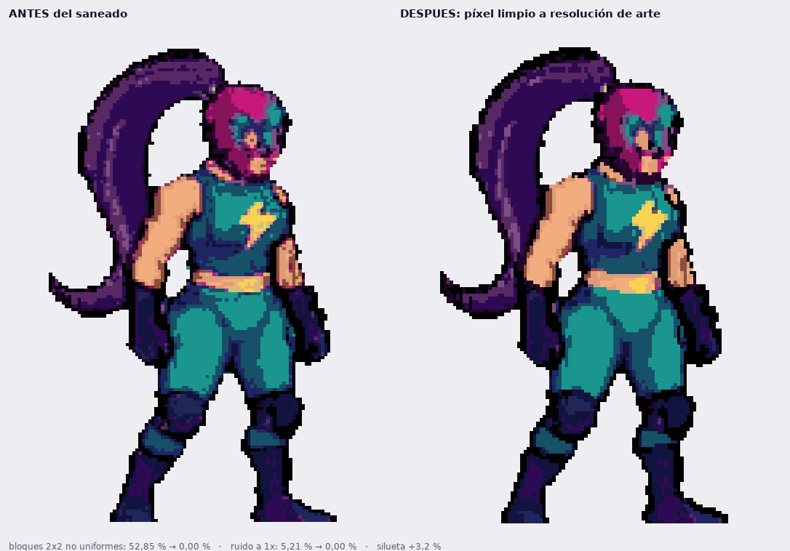
Antes y después del saneado. No se redibuja nada: se fuerza el píxel a
resolución de arte, que es lo que quita el color mezclado de la cara.
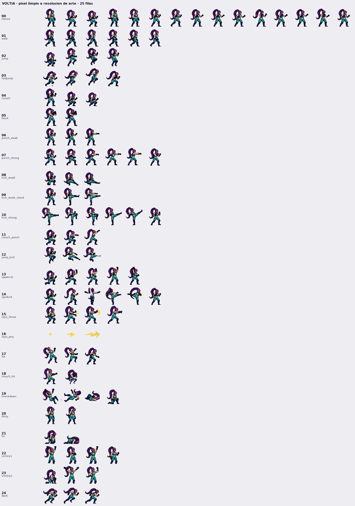
Las 25 filas saneadas, mismas animaciones y mismos frames.
Consejo: magenta y verde sirven para comprobar la transparencia y el chroma.
Enmascarada del circuito clandestino de Puerto Voltaje. Tras el accidente del
reactor que mató a su tag-team, su traje de lucha absorbe y devuelve cada voltio:
sus puños cargan estática y sus patadas cierran el circuito. Lucha para desmantelar
la promotora que amañó aquella noche… máscara rosa, coleta violeta y cero piedad.
Historia en borrador: corrígela a tu gusto y queda fijada como canon del manual.